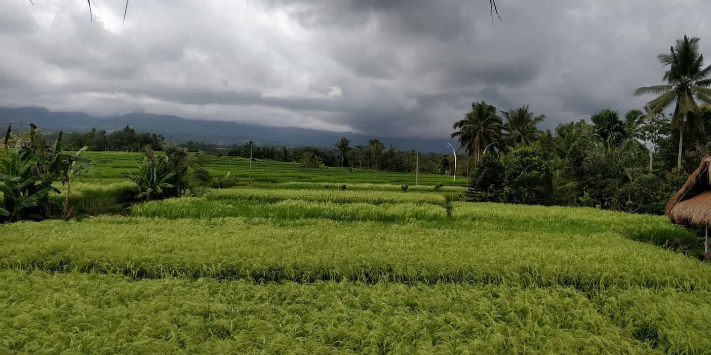
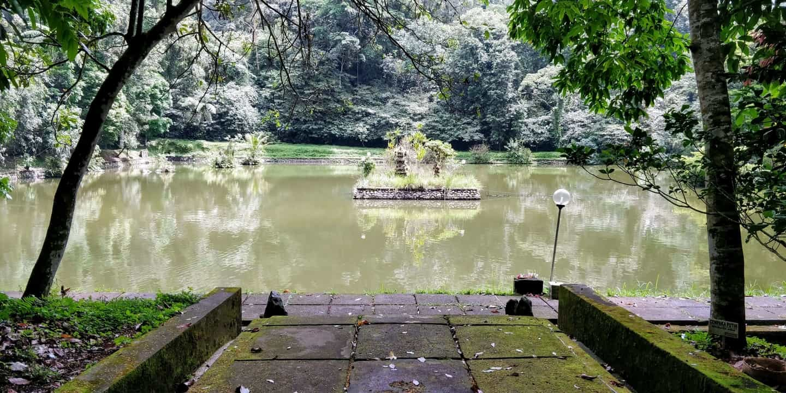

Travels
Every now and then, I travel to other countries with my family. Here are some photos from my travels.



Hi. I am Ang Yak Hng from the Diploma of Infocomm Technology, or DIT course in Singapore Polytechnic. I've had a profound interest in technology ever since I joined the School of Science and Technology, Singapore, or SST, a specialised secondary school that makes use of technology to teach.
Well, it wasn't always like this. When I first joined SST, I wanted to go to JC like what many of my family members did, but over time, as I progressed through SST, I realised I liked to do hands-on activities much more than sitting down in front of a desk and cramming. Thus, in the middle of Secondary 4, my ideals changed, shifting more in favour of polytechnic, and well, here I am.
Every now and then, I travel to other countries with my family. Here are some photos from my travels.